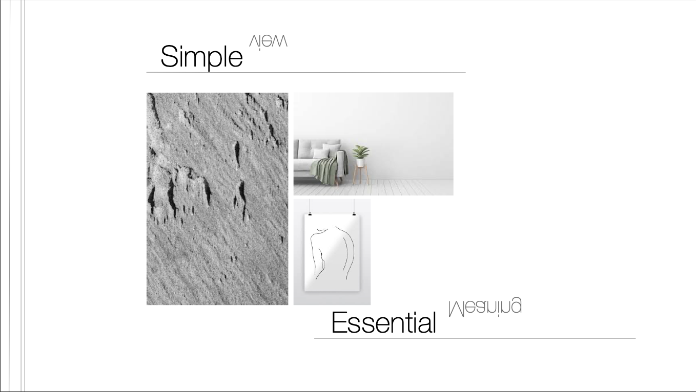
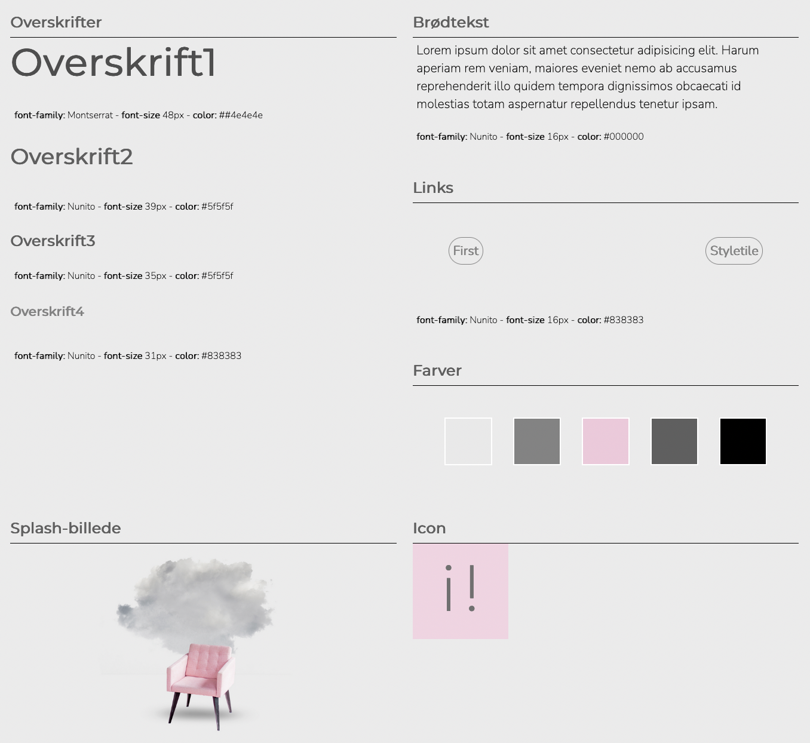

Under tema2 har jeg lært om gestalt lovene, som er en slags "guide-line" eller nogle konventioner indenfor design, som henholdsvis kan være fx plads mellem linjer eller opsætning af indhold. Jeg er blevet introduceret for styletile og moodboard som er en ramme design-mæssigt for hvilke farver, fonte, hvilken stil, UI-elementer eller tema man vil benytte til det produkt man skal lave.
Jeg har lært metoder til hvordan man opsætter en hjemmeside vha. wireframe, layoutdiagram og mockup. Desuden har jeg lært om filtyper og hvornår de skal anvendes.
Jeg er blevet introduceret for hvordan man koder med grid og flexbox så man kan designe hvor man vil have sit indhold.
Dette vil jeg vise med opgaven 02.04.02 responsive_site_v2, som jeg har lavet under tema2.
Under tema2 blev vi inddelt i grupper og min gruppe fik tildelt stilarten minimalisme.
Jeg tog derfor udgangspunkt i minimalismens konventioner til at designe min opgave, som betød at jeg havde fokus på det essentielle, simple og princippet "Less is more".
Mit koncept forholder sig til en inspirations hjemmeside til indretning af bolig, hvor både stilen på hjemmesiden og billeder forholder sig til det minimalistiske.
Jeg valgte derfor nogle neutrale fonte, grålige og analoge farver til mit design med brug af white space. Minimalisme kan selvfølgelig fortolkes på mange måder, men det her var mit take på det
Jeg gjorde brug af grid og flexbox som følge af det wireframe vi blev tildelt til opgaven.